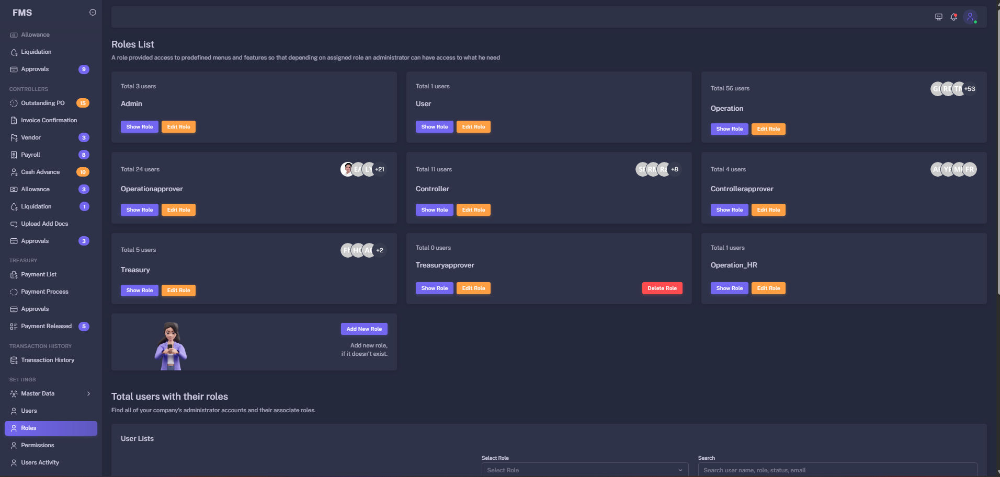
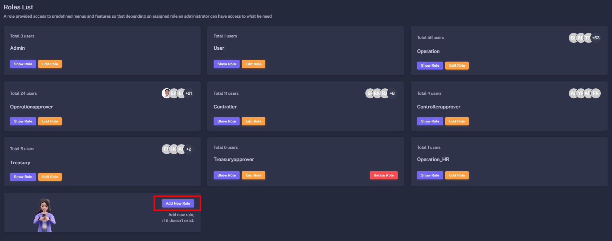
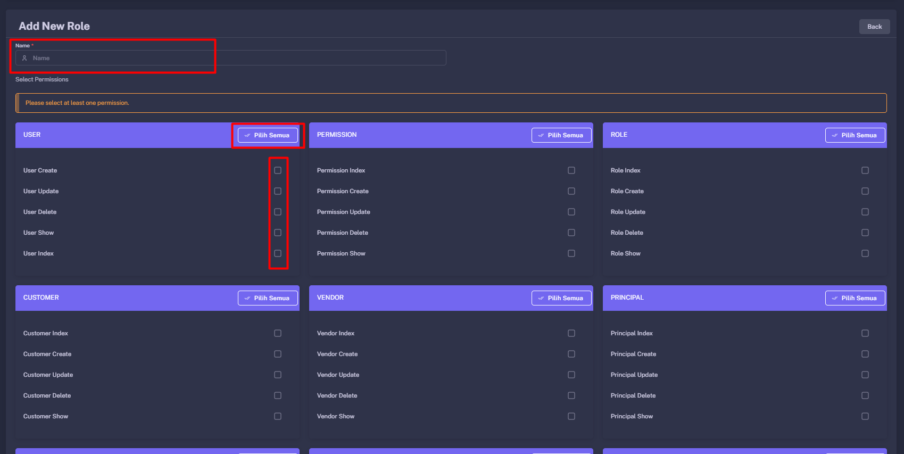
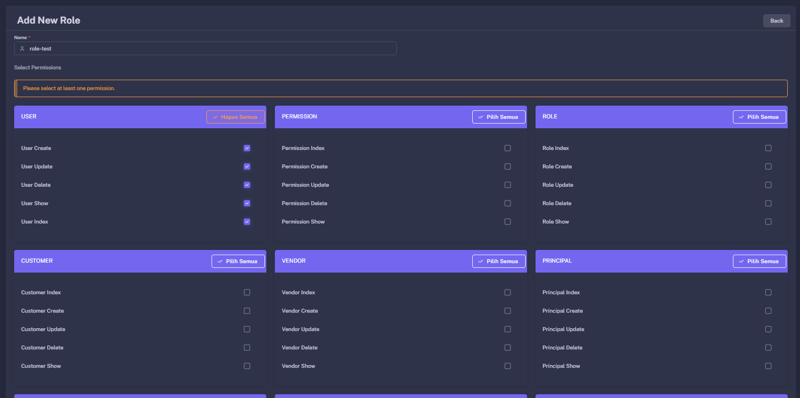
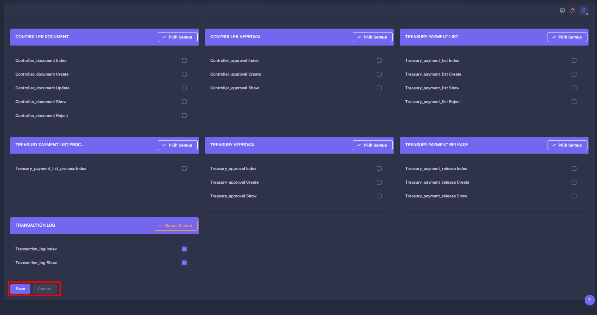
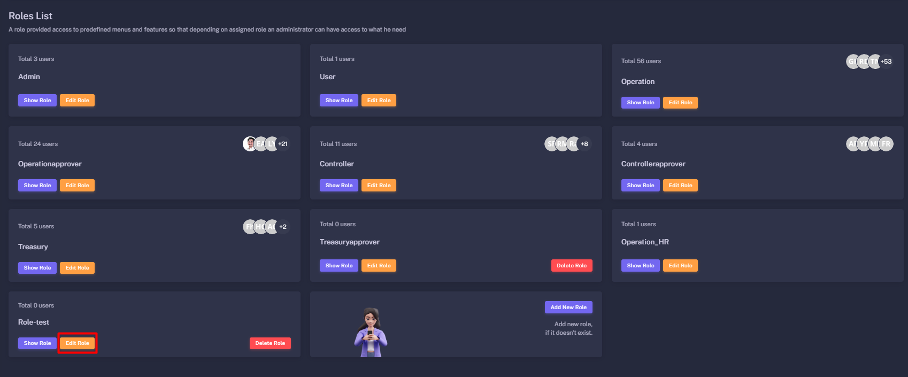
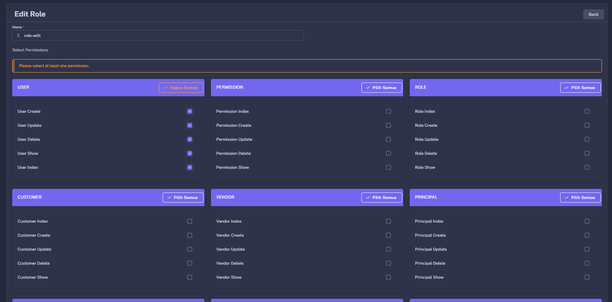

Role & Permission Guide
The Role & Permission module defines user roles, controls permissions and menu access, and supports secure segregation of duties in the Finance Management System.
Role Overview
A role is a collection of permissions assigned to users with similar responsibilities.
Role Management Overview
Use the Role menu to view configured roles and manage access configuration.

Recommended role management flow
Role administration should be restricted to authorized administrators because permission changes can affect sensitive finance access.
Role List
The Role List displays configured roles and provides access to review, edit, and maintain permissions.
Typical actions
- Search for a role by name or keyword.
- Review users assigned to a role.
- Open role details and permission settings.
- Create or edit an existing role.
How to find a role
- Open the
Rolemenu. - Use the search field to enter a role name.
- Select a role from the result list to view its details.
Create Role
Create a new role when a job function needs a unique combination of menus, actions, approval authority, or data scope.
How to create a role
- Open the
Rolemenu and select the create-role action. - Enter a clear role name and description.
- Select the required permissions.
- Review the settings and save the new role.




Avoid duplicate roles with overlapping purposes. Review existing roles before creating a new one.
Edit Role
Edit a role when its name, description, permissions, menu access, or business responsibilities need updating.
How to edit a role
- Open the
Rolemenu and find the target role. - Open the available action menu and select
Edit. - Update role details or permissions as required.
- Review the effect on assigned users and save the changes.


Changes to a role may affect every user assigned to it. Review user assignments before applying significant changes.
Assign Permissions
Permissions define actions a role can perform, including viewing, creating, updating, approving, and releasing records.
Grant approval, payment release, user-management, and role-management permissions only with explicit authorization.
Assign Role to User
Assign configured roles to users through the User Management module.
- Open the
Usermenu. - Find the target user account and select
Edit. - Find the
RoleorAssigned Rolesfield. - Select the required role and save changes.
- Ask the user to sign in again if permissions are applied on a new session.
Test the user’s access after assignment to confirm expected menus are available and restricted actions remain unavailable.
Role Examples
These examples show typical separation of responsibilities; adjust them to your organization’s approval matrix.
| Role Example | Primary Access | Typical Restrictions |
|---|---|---|
| Operational Staff | Create and submit operational records. | Should not approve their own transactions or release payments. |
| Controller Reviewer | Review documents and validate transactions. | Should not create the source transactions they review. |
| Treasury Processor | View requests and prepare payment instructions. | Should not release payments unless authorized. |
| Treasury Approver | Approve payment instructions within assigned authority. | Should not approve requests beyond their limit. |
| System Administrator | Manage users, roles, permissions, and configuration. | Should not perform routine finance approvals unless authorized. |
Role and Permission Security Guidelines
Apply these controls to maintain secure role administration.
Do not give one user unrestricted ability to create, approve, and release the same payment unless explicitly authorized and controlled.